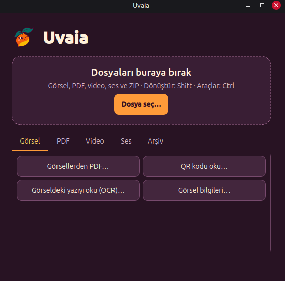

Görsel
- PNG, JPG ve WebP dönüştürme, toplu dönüştürme
- Küçültme, kırpma, sıkıştırma
- Döndürme, yansıtma, parlaklık ve kontrast ayarı
- EXIF ve konum bilgisini görme, metaverisiz kopya kaydetme
- Yazı okuma (OCR) ve QR okuma
- Görsellerden PDF oluşturma
Linux aracı · 2026
Linux Mint Cinnamon için yerel, sürükle-bırak dosya dönüştürme aracı. Görsel, PDF, video, ses ve arşiv işlemleri tek pencerede.

Dosyayı pencereye bırakınca ilgili sekme açılır. Sonuç, kaynak dosyanın klasörüne kaydedilir.
Kurulum komutu Cinnamon menüsüne ve Nemo'nun sağ tık menüsüne "Uvaia ile aç" seçeneğini ekler.
Nemo'da bir dosyayı sürüklerken Shift'e basınca çıkan çarktan dönüştürme biçimini seçip dosyayı o dilime bırakırsın. Kaynak dosya her zaman korunur.
OCR dahil her şey bilgisayarında çalışır. Dosyaların hiçbir yere gönderilmez.
Depoyu indirdikten sonra proje klasöründe sırayla çalıştır. Cinnamon ve Nemo menülerine eklemek ve OCR için gereken paketler README'de anlatılıyor.
python3 -m venv .venv .venv/bin/python -m pip install -r requirements.txt .venv/bin/python uvaia.py